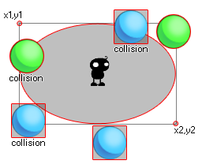

Collision_ellipse uses the first four arguments (x1,y1,x2,y2) to define the width and height of an ellipse within the current room and then checks to see if any object that is defined by the "obj" argument is in collision with that area. This collision can be checked as precise or not, and you may also choose to check for the instance running the code itself or not. Consider this image: 
Here, the instance in the middle is using a collision ellipse to check for ball objects. Now, the blue ones do not have a precise bounding box and as you can see, even if the sprite is not actually touching the ellipse, the collision can still happen (even if you set the precise option in the function to true) as the bounding box of that sprite over-laps the elliptical area defined by collision_circle. On the other hand, the green balls will only be considered in collision if the actual sprite over-laps the defined ellipse. Remember, for precise collisions to be considered both the object sprite and the collision function must have precise marked as on. It should also be noted that the return value of the function can be the id of any one of the instances considered to be in collision.
collision_ellipse(x1, y1, x2, y2, obj, prec, notme);
| Argument | Description |
|---|---|
| x1 | The x coordinate of the left side of the ellipse to check. |
| y1 | The y coordinate of the top side of the ellipse to check. |
| x2 | The x coordinate of the right side of the ellipse to check. |
| y2 | The y coordinate of the bottom side of the ellipse to check. |
| obj | The object to check for instance collisions. |
| prec | Whether the check is based on precise collisions (true, which is slower) or its bounding box in general (false, faster). |
| notme | Whether the calling instance, if relevant, should be excluded (true) or not (false). |
Instance id or noone
if collision_ellipse(50, 50, 200, 100, obj_Player,
false, true)
{
instance_create_layer(obj_Player.x, obj_Player.y,
"Effects", obj_Splash);
}
This will check an elliptical zone within the bounds of 50x, 50y and 200x, 100y for the object "obj_Player". If there is a collision with that object, then it will create an instance of "obj_Splash" at the x/y coordinates of obj_Player.